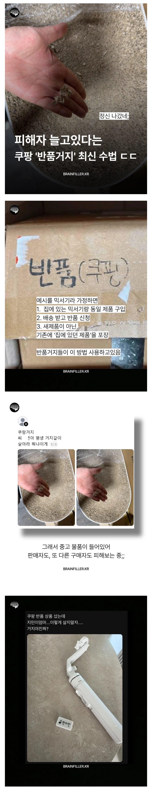

72 · 4 · 1 시간 전 · 원문
https://bbs.ruliweb.com/best/board/300143/read/77337933

수집 당시 댓글 4개
표범 · 19 시간 전
살면서 반품은 아예 불량품 왔을 때 한번인가 두번인가 해봤는데
옆집 사는 사람은 거의 60~70%는 반품하는 것 같음
두세개 받는가 싶으면 다음날 한두개씩 반품 내놓더라 블랙 안당하는지 궁금할정도로
↳ 답글 · 비단잉어 · 14 시간 전
옷사고입어보고반푸하나봐
ㄴㅓㄱㅔㅇㅣ · 15 시간 전
옷 같은건 사이즈 별로 사서 작은거 부터 입어보고 맞으면 다른건 그대로 환불하는건 이해하는데 저건 쌍거지자나
글레바 · 14 시간 전
저런거 무서워서 개봉상품 살짝싸게파는거 못사겟더라 쿠팡서
살면서 반품은 아예 불량품 왔을 때 한번인가 두번인가 해봤는데
옆집 사는 사람은 거의 60~70%는 반품하는 것 같음
두세개 받는가 싶으면 다음날 한두개씩 반품 내놓더라 블랙 안당하는지 궁금할정도로